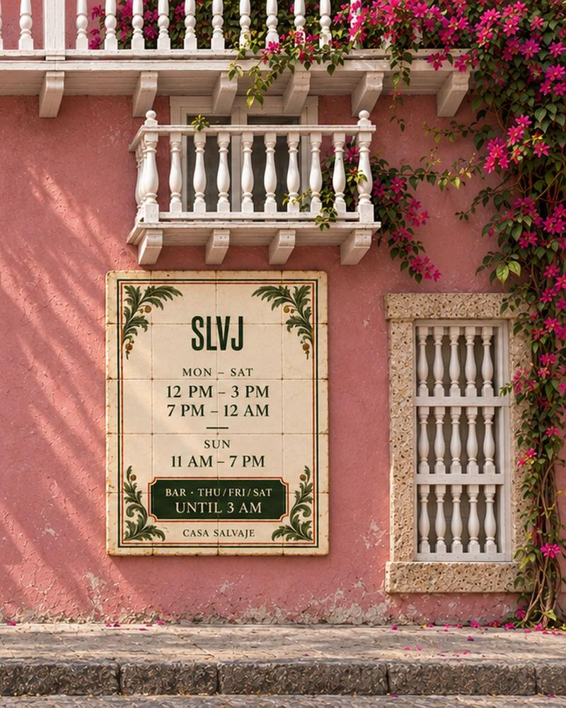

Una casa nella città murata: dove dormire a Cartagena
Da un hotel con un rooftop jazz a una casa coloniale con patio per tutto il gruppo: come scegliere e cosa verificare prima di prenotare.

La chiave di solito è di ferro, e pesa nella mano. La porta si spalanca, la luce di mezzogiorno inonda l'androne e lì in fondo c'è il patio: una palma, una fontana, una scala di legno che sale verso la terrazza. Cartagena offre ogni tipo di alloggio: boutique hotel in case coloniali, case intere con piscina per grandi gruppi e migliaia di appartamenti sulle piattaforme. La scelta giusta dipende da con chi viaggiate e da quanto volete camminare la sera.
Vivere in una casa coloniale, anche solo per qualche giorno
Cartagena è una città fatta di case. Dal giorno in cui Pedro de Heredia la fondò, nel 1533, mercanti, funzionari della Corona e famiglie creole costruirono dentro le mura dimore di due e tre piani, ciascuna con androne, patio centrale e balconi di legno sporgenti sulla strada. Le mura che le proteggono, costruite tra il Cinquecento e il Settecento dopo incursioni come quella di Francis Drake nel 1586, hanno mantenuto quasi intatto il tracciato della Città Vecchia, e nel 1984 l'UNESCO l'ha dichiarata Patrimonio dell'Umanità.
Soggiornare in una di quelle case è un modo per capire la città dall'interno: il patio che dà ombra a mezzogiorno, la scala di legno che scricchiola, il tetto dove le cupole catturano l'ultima luce. Qui, scegliere dove dormire conta quasi quanto scegliere dove mangiare.
Le mattine hanno il loro rito. Per la Città Vecchia passano le palenqueras, in abiti dai colori vivaci e con catini di frutta in equilibrio sulla testa. Vengono da San Basilio de Palenque, il villaggio fondato da africani fuggiti dalla schiavitù sotto la guida di Benkos Biohó, le cui tradizioni l'UNESCO ha riconosciuto patrimonio immateriale dell'umanità nel 2005.
A Cartagena, scegliere dove dormire conta quasi quanto scegliere dove mangiare.
I · L'hotel
Townhouse: un piccolo hotel, un rooftop e il jazz
Nella città murata, a pochi passi da Plaza Fernández de Madrid, Townhouse è un boutique hotel con una manciata di camere e due bar: un rooftop con piccole piscine e vista sui tetti di coppi, e un bar nella lobby che nel fine settimana si trasforma in speakeasy con musica jazz.
Quella piazza è una delle più letterarie della città. In L'amore ai tempi del colera, Gabriel García Márquez la chiamò parco degli Evangeli, e da una delle sue panchine Florentino Ariza fingeva di leggere aspettando di intravedere Fermina Daza, la cui casa di ragazza il romanzo colloca sullo stesso parco. L'autore riconobbe poi che si trattava di Plaza Fernández de Madrid.
Ideale per coppie o amici che vogliono un hotel con atmosfera senza lasciare la Città Vecchia.
II · La casa
Case vacanza coloniali
Per i gruppi (famiglie, compleanni, addii al celibato e al nubilato), una casa coloniale intera è spesso l'opzione migliore: diverse camere con bagno privato, un patio, una piscina o una terrazza e, spesso, servizio di pulizia, colazione e un concierge per transfer, barche per le isole e prenotazioni al ristorante. Alcune agenzie locali sono specializzate in case nella Città Vecchia e a Getsemaní, e molte sono presenti anche sulle piattaforme.
Se la vostra casa è a Getsemaní, vale la pena sapere dove dormite: l'11 novembre 1811 questo quartiere di artigiani fuori dalle mura, guidato da Pedro Romero e dai suoi lanceros, spinse Cartagena a proclamare l'indipendenza assoluta dalla Spagna.
III · Le piattaforme
Airbnb, Booking e Vrbo
- Airbnb: la scelta più ampia di case e appartamenti nella Città Vecchia, a Getsemaní, Bocagrande e Manga, oltre a esperienze con guide locali.
- Booking: hotel e appartamenti fianco a fianco; comodo per confrontare i prezzi e prenotare con cancellazione flessibile.
- Vrbo: specializzato in case intere, ideale per gruppi numerosi.
IV · Prima di prenotare
Cosa verificare prima di prenotare
- Registro Nacional de Turismo (RNT): in Colombia le strutture turistiche, comprese le case vacanza, devono essere registrate. Molti annunci riportano il numero; se manca, chiedetelo.
- Aria condizionata in tutte le camere, non solo in quella principale.
- Posizione esatta: la Città Vecchia e San Diego si girano a piedi; Bocagrande e Manga sono a un breve tragitto in auto.
- Rumore: la Città Vecchia ha vita notturna nel fine settimana. Se andate a dormire presto, cercate strade più tranquille, come quelle di San Diego.
- Scale e piscine: molte case coloniali hanno due o tre piani e niente ascensore.
- Recensioni recenti e politiche di cancellazione, soprattutto in alta stagione e nei ponti.
Epilogo
La prima notte
Qualunque casa scegliate, la prima notte a Cartagena è fatta per camminare. Le strade cambiano nome a ogni isolato, molti dei nomi ereditati dall'epoca coloniale, e la brezza che arriva dal mare al tramonto richiama tutti sui balconi e nelle piazze. È il momento di lasciare i bagagli e uscire a cena.
Se alloggiate nella Città Vecchia, Casa Salvaje è a una passeggiata: Calle Santa Teresa #32-41, a due isolati da Plaza Santo Domingo. Consultate gli orari e le nostre guide ai boutique hotel e ad altri boutique hotel.